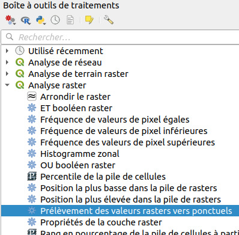

IX. Analyse spatiale
IX.3 Analyse spatiale : croisement de données vecteur et raster
Pour compléter ce chapitre, voici un exemple d'analyse mettant en jeu données vecteur et raster : en partant d'une couche de pente, et d'une couche de points représentant des échantillons, nous allons calculer la valeur de la pente pour chacun des échantillons.
Préparation des données : un seul SCR pour tous
Ouvrez un nouveau projet QGIS, ajoutez-y la couche srtm_21_09.tif.
Ajoutez également la couche echantillons_jamaique_JAD2001 fournie dans le dossier TutoQGIS_09_AnalyseSpat/donnees. Cette couche correspond à la localisation de points d'études imaginaires.
On peut lire le SCR dans les propriétés de la couche, rubrique Source :
srtm_21_09.tif → WGS84 EPSG:4326
echantillons_jamaique_JAD2001 → JAD2001 EPSG:3448
Il est possible soit de changer le SCR du raster, soit de changer le SCR du vecteur. Néanmoins, le temps de calcul est généralement moins long lorsqu'il s'agit de modifier le SCR d'une couche vecteur, en particulier pour une couche de points.
Modifiez le SCR de la couche echantillons_jamaique_JAD2001 vers le WGS84 EPSG:4326. Nommez la nouvelle couche echantillons_jamaique_WGS84.
Supprimez de QGIS echantillons_jamaique_JAD2001.
Votre projet QGIS doit contenir uniquement les 2 couches echantillons_jamaique_WGS84 et srtm_21_09. Vérifiez qu'elles sont toutes deux en WGS84.
Nous avons vu qu'il n'est pas toujours nécessaire de travailler avec des couches dans le même SCR, certains outils acceptant de croiser 2 couches dans 2 SCR différents. Cependant, cela reste une bonne pratique et peut éviter des problèmes !
Attribuer à chaque point une valeur d'élévation
Comment faire pour donner à chacun des points sa valeur d'élévation ? Il faut pour cela attribuer à chaque point la valeur du pixel qui le recouvre.
Une recherche dans la boîte à outils, rubrique Analyse Raster, permet de découvrir l'outil Prélèvement des valeurs rasters vers ponctuels qui semble correspondre à ce que l'on cherche.
Boîte à outils → Analyse raster → Prélèvement des valeurs rasters vers ponctuels 
{kind=link}
- Couche de points en entrée : echantillons_jamaique_WGS84
- Raster layer to sample : srtm_21_09
- Préfixe de la colonne en sortie : vous pouvez taper par exemple elev
- Laissez l'option de sortie par défaut, pour créer une couche temporaire
Ici, notre raster ne possède qu'une seule bande. Certains raster en possèdent plusieurs, c'est le cas par exemple des images satellites qui ont différentes bandes pour le vert, le rouge, l'infrarouge etc.
Cet outil ajoutera autant de colonnes à la table de la couche de points que de bandes dans le raster. Ces champs auront en suffixe le numéro de bande (1, 2...), auquel il est donc possible de rajouter un préfixe.
Ici, le nouveau champ sera donc nommé elev1.
Cliquez sur Exécuter, la couche temporaire est ajoutée et se nomme Sampled Points. Elle possède les mêmes géométries que la couche de points en entrée, et une colonne de plus dans sa table.
Ouvrez sa table attributaire pour le vérifier : une colonne elev1 a été ajoutée, où l'élévation de chaque point est renseignée.
{kind=link}
Attention toutefois, la résolution des données d'élévation est de 90 mètres : si les points représentent une location précise par exemple au mètre près, l'élévation que nous leur avons attribué n'aura pas cette précision.
Nous avons vu ici un exemple très simple montrant qu'on peut croiser données vecteur et raster. Il est également possible de transformer des données vecteur en raster (rastérisation) et inversement (polygonisation).
Par exemple, on peut vouloir rasteriser une série de couches vecteurs surfaciques pour pouvoir les additionner facilement, ou bien vectoriser une couche raster représentant des zones pour pouvoir y affecter des données attributaires...
Chaque type de données a une utilisation différente, mais il est utile de garder à l'esprit que les 2 existent !
chapitre précédent chapitre suivant
haut de page